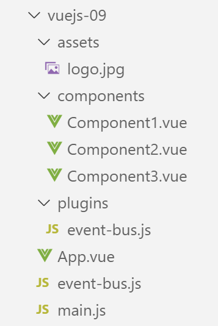
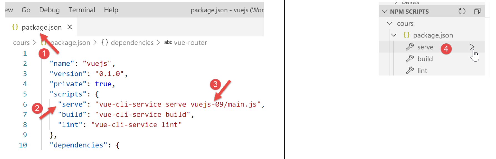

11. المشروع [vuejs-09]: استخدام مكون إضافي [eventBus]
المشروع [vuejs-09] مطابق للمشروع [vuejs-08] باستثناء أنه يقدم مفهوم المكون الإضافي. هيكل المشروع كالتالي:

11.1. المكوّن الإضافي [./plugins/event-bus]
يظل البرنامج النصي [./event-bus.js] كما كان في المثال السابق:
import Vue from 'vue';
const eventBus = new Vue();
export default eventBus;
المكوّن الإضافي [./plugins/event-bus.js] هو كما يلي:
export default {
install(Vue, eventBus) {
// إضافة خاصية [$eventBus] إلى فئة Vue
Object.defineProperty(Vue.prototype, '$eventBus', {
// عند الإشارة إلى Vue.$eventBus، يتم عرض المعلمة الثانية [eventBus]
get: () => eventBus,
})
}
}
تعليقات
- المكوّن الإضافي [Vue] هو كائن له دالة [install] (السطر 2). سيتم استدعاء هذه الدالة تلقائيًا عندما يعلن رمز ما عن استخدام المكوّن الإضافي؛
- الأسطر 1-9: الكائن الذي يتم تصديره بواسطة البرنامج النصي؛
- السطر 2: تقبل الدالة [install] هنا معلمتين:
- [Vue]: الدالة التي يتم الحصول عليها بواسطة الأمر [import Vue from ‘Vue’]. ويمكن اعتبارها بمثابة فئة؛
- [eventBus]: الكائن الذي يتم تصديره بواسطة البرنامج النصي [./event-bus]؛
- الأسطر 4-7: تُعدّل تعريف (أو ما يُسمى بالنموذج الأولي) الدالة [Vue] بإضافة الخاصية [$eventBus] إليها. إذا أخذنا المصطلح [classe] في الاعتبار، فإن الخاصية [$eventBus] تُضاف إلى الفئة [Vue]. وبالتالي، ستتمكن المكونات التي تمثل مثيلات لـ [Vue] من الوصول إلى هذه الخاصية الجديدة؛
- تشير السطر 6 إلى أنه عند الإشارة إلى الخاصية [Vue].$eventBus، سنحصل على المعلمة [eventBus] الموجودة في السطر 2. وسنرى لاحقًا أن هذا المعلمة الثانية ستكون الكائن [eventBus] الذي تم تصديره بواسطة البرنامج النصي [./event-bus.js]. وبالتالي، في النهاية، عندما يستخدم مكون C التعبير [C.$eventBus]، فإنه سيشير إلى الكائن [eventBus] الذي تم تصديره بواسطة البرنامج النصي [./event-bus.js]. وهذا سيجنبها استيراد البرنامج النصي [./event-bus.js]. وهنا تكمن فائدة المكون الإضافي: تبسيط الوصول إلى الكائن [eventBus] الذي تم تصديره بواسطة البرنامج النصي [./event-bus.js]؛
- تجدر الإشارة إلى أن المكون الإضافي لا يجب أن يُسمى [event-bus.js] بالضرورة. كان من الممكن تسميته [plugin-event-bus] على سبيل المثال؛
- تجدر الإشارة أيضًا إلى أن الرمز $ في [$eventBus] هو اصطلاح للإشارة إلى خصائص [Vue] التي تمت إضافتها عبر المكونات الإضافية. ليس من الضروري الالتزام بهذا الاصطلاح. لكننا سنلتزم به في هذا النص؛
11.2. البرنامج النصي الرئيسي [main.js]
يُعرّف البرنامج النصي [./plugins/event-bus.js] مكونًا إضافيًا لإطار العمل [Vue.js]. هذا المكون الإضافي لم يُستخدم بعد، بل تم تعريفه فقط. والبرنامج النصي [main.js] هو الذي يقوم بتنشيطه:
// عمليات الاستيراد
import Vue from 'vue'
import App from './App.vue'
// المكونات الإضافية
import BootstrapVue from 'bootstrap-vue'
Vue.use(BootstrapVue);
// bootstrap
import 'bootstrap/dist/css/bootstrap.css'
import 'bootstrap-vue/dist/bootstrap-vue.css'
// eventbus
import eventBus from './event-bus';
import PluginEventBus from './plugins/event-bus';
Vue.use(PluginEventBus, eventBus);
// التكوين
Vue.config.productionTip = false
// إنشاء مثيل للمشروع [App]
new Vue({
render: h => h(App),
}).$mount('#app')
تعليقات
- تعمل الأسطر 14-16 على تنشيط المكون الإضافي [PluginEventBus]. بعد السطر 16، تمتلك جميع مثيلات الفئة (الدالة) [Vue] الخاصية [$eventBus] التي تشير لكل منها إلى نفس الكائن الذي تم تصديره بواسطة البرنامج النصي [./event-bus.js]. وسيكون هذا هو الحال بالنسبة لكل مكون من مكونات المشروع؛
11.3. الطريقة الرئيسية [App]
تظل الواجهة الرئيسية [App] كما كانت في المشروع السابق.
11.4. المكون [Component1]
يستخدم المكون [Component1] الآن خاصيته [$eventBus] للاستماع إلى الحدث [someEvent]:
<template>
<b-row>
<b-col>
<b-alert show
variant="warning"
v-if="showMsg">Evénement [someEvent] intercepté par [Component1]. Valeur reçue={{data}}</b-alert>
</b-col>
</b-row>
</template>
<script>
export default {
name: "component1",
// حالة المكون
data() {
return {
data: "",
showMsg: false
};
},
// طرق إدارة الأحداث
methods: {
// إدارة الحدث [someEvent]
doSomething(data) {
this.data = data;
this.showMsg = true;
}
},
// إدارة دورة حياة المكون
// حدث [created] - تم إنشاء المكون
created() {
// استماع إلى الحدث [someEvent]
this.$eventBus.$on("someEvent", this.doSomething);
}
};
</script>
تعليقات
- السطر 33، استخدام الخاصية [this.$eventBus] للمكون. وتجدر الإشارة أيضًا إلى أن البرنامج النصي في السطر 11 لم يعد يستورد البرنامج النصي [./event-bus.js]؛
11.5. المكون [Component2]
يستخدم المكون [Component2] الآن خاصيته [$eventBus] لإصدار الحدث [someEvent]:
<template>
<div>
<b-button @click="createEvent">Créer un événement</b-button>
</div>
</template>
<!-- نص برمجي -->
<script>
export default {
name: "component2",
// طرق إدارة الأحداث
methods: {
createEvent() {
this.$eventBus.$emit("someEvent", { x: 2, y: 4 })
}
}
};
</script>
تعليقات
- السطر 13، استخدام الخاصية [this.$eventBus] للمكون. وتجدر الإشارة أيضًا إلى أن البرنامج النصي في السطر 7 لم يعد يستورد البرنامج النصي [./event-bus.js]؛
11.6. المكون [Component3]
المكون [Component3] له نفس كود المكون [Component1]. وهو أيضًا يستمع إلى الحدث [someEvent].
11.7. تنفيذ المشروع

نحصل على نفس النتائج التي حصلنا عليها في المشروع السابق.